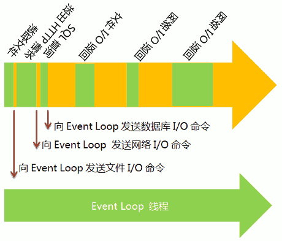

浅谈 Event Loop
之前看了一篇关于，Event Loop的文章，做了下面的笔记。
Event Loop 是解决 JavaScript 单线程问题的一种运行机制
当程序接受到了请求之后，就会把请求交给Event Loop 然后继续往下执行，这样就不用等待请求返回，继续执行下面的代码，当Event Loop完成后会把结果返回给程序，程序再调用已经设定好的回调函数，完成任务
但是就会出现了如下的问题
1. 程序继续往下跑是一个进程 那Event Loop跑的难道不是另一个线程吗？
2. 如果Event Loop 接受到很多个请求，那是按什么顺序去执行？
3. Event Loop 完成后把结果返回给程序，程序是立刻执行吗？正在执行的代码怎么办？
后来我在 stackoverflow 上看到 "Understanding the Event Loop" 和 tuts+ 里的 "Event-Based Programming: What Async Has Over Sync"
下面是我对Event Loop的个人理解
像 tuts+ 里说的 "the Event Loop is a queue of callback functions."
JavaScript执行程序，当执行到异步代码 (async code) 的时候，会把回调函数放在Event Loop里，然后继续往下执行，当区块中的其他全部代码执行完之后，再去执行Event Loop里面的回调函数。
怎么验证呢，我们使用JavaScript里最基础的异步函数 setTimeout()
console.log('a');
setTimeout(function() {
console.log('b');
}, 0);
console.log('c');
没错 输出为 a c b 这就可以证明上面所说的，回调函数输出b，但一定要等区块里的其他代码执行完后，才可以执行，再看一个例子。
console.log('a');
test();
console.log('c');
function test() {
console.log('d');
setTimeout(function() {
console.log('b');
}, 0);
console.log('e');
}
输出 a d e c b 这下就更清楚明白了，所以Event Loop其实并不是另一个线程，只是一个放回调函数的队列，等待线程去执行，那就解决了上面的两个问题了，还有一个问题，如果Event Loop里有很多回调函数，他们执行的顺序又是怎样呢？我们先来看一个例子
setTimeout(function() {
console.log('a');
}, 20);
setTimeout(function() {
console.log('b');
}, 10);
setTimeout(function() {
console.log('c');
}, 30);
输出是 b a c， web API里的windowTimers计算时间，10ms后把 console.log('b') 放在了 Event Loop，如此类推。说明 Event Loop 是一个先进先出的队列(FIFO)，先放进去的回调函数会先拿出来执行。
整个浏览器可以说就是下面的这张图

Heap : 用来存放变量
Stack : 用来执行 JavaScript (只会执行位于Stack里顶部的代码)
Web API : 执行DOM XMLHttpRequest setTimeout等，执行完后把回调函数放在callback queue里
Event loop : 只有当 Stack 为空并且 callback queue里有回调函数的时候，才会把callback queue里的函数代码放到Stack里执行
参考资料：
http://stackoverflow.com/questions/21607692/understanding-the-event-loop
http://code.tutsplus.com/tutorials/event-based-programming-what-async-has-over-sync--net-30027
http://www.youtube.com/watch?v=8aGhZQkoFbQ
如有错误 欢迎指正 : )